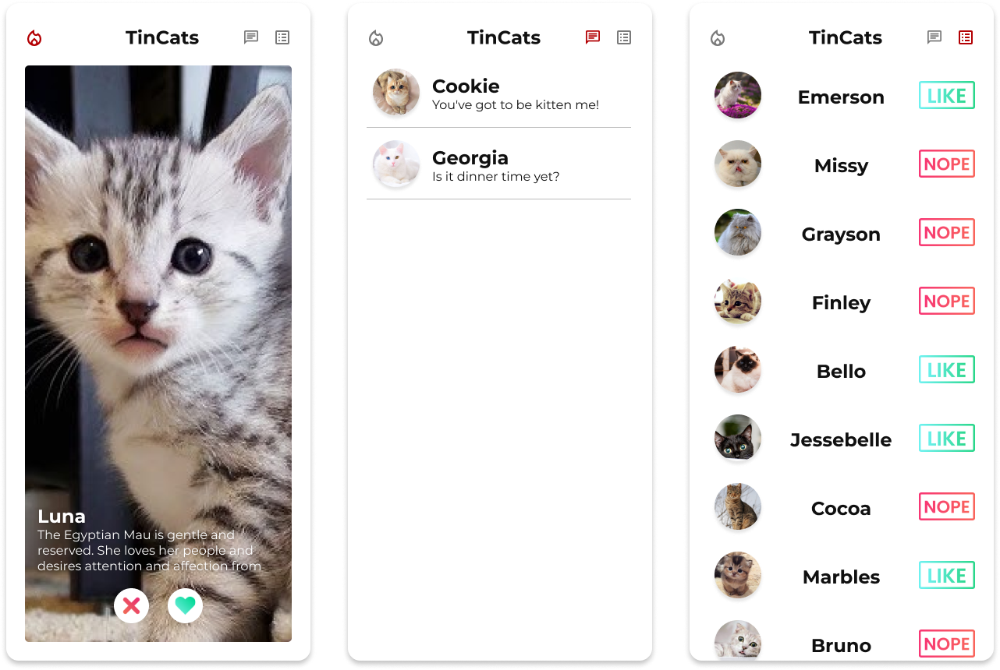
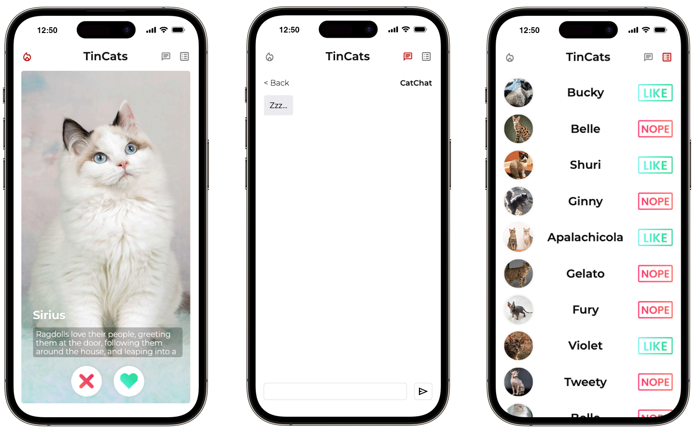
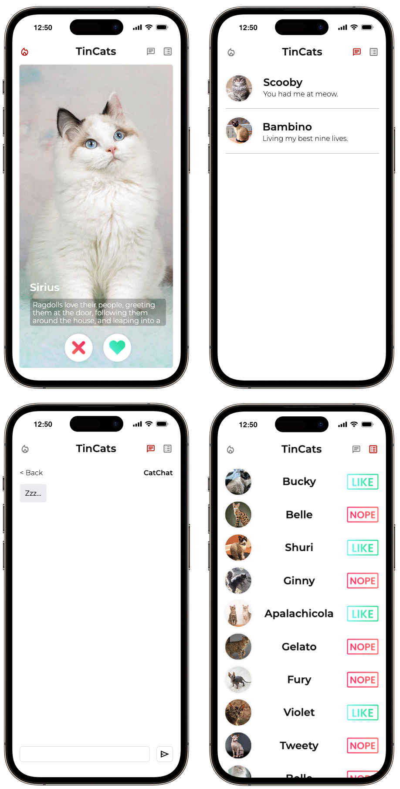

Project
Create a Tinder-style app for swiping cats

Summary
I developed an application that allows users to like or dislike cats and engage in chats with them

Responsibilities
Front-End Development
Web Design
Project
Create a Tinder-style app for swiping cats
Summary
I developed an application that allows users to like or dislike cats and engage in chats with them
Responsibilities
Front-End Development
Web Design
Concept
Practice, practice, practice—it's the advice many people give when learning to code. So, I followed it. This project is one of my attempts at creating a variant of an already "overdone" concept, Tinder. By doing so, I could shift my focus away from design and concentrate more on the coding aspects.
I aimed to include a few essential features:
- The ability to like and dislike
- The ability to chat
- A history review feature
- The option to close the web-app and resume later
Design
Rather than building an entire design system from scratch, I drew inspiration online and created screens that represent a version of Tinder, incorporating the essential features I wanted. I aimed for a minimalistic design that lets the photos take center stage, making them the standout element. To keep the interface clean and neat, I used intuitive icons and a simple layout.
Build
Using an API for this project was an obvious choice. It enables the user to swipe 'infinitely' while sparing me the effort of creating and maintaining my own cat database. Additionally, I have a strong preference for asynchronous web pages, as seen in my other projects, so I wanted to integrate that functionality here too. Given the features I aimed to include, building this project with a focus on DOM manipulation was essential.
 While dynamically manipulating the DOM, I had to ensure that chats and lists appeared in response to user interactions. This meant continuously pushing and rendering data, which proved to be quite a challenge to implement.
Code
-
let chatData = JSON.parse(localStorage.getItem('chat')) || [];
// Function that will push the new cat data
function pushChatFunc() {
const chatItem = {
url: currentCatData.url,
name: catNamesSaved[catNamesSaved.length - 1],
chatText: textGenerate()
};
chatData.push(chatItem);
localStorage.setItem('chat', JSON.stringify(chatData));
renderChatItem(chatItem);
};
// Function that will render an actual item into the document
function renderChatItem(item) {
const chatItemDiv = document.createElement('div');
chatItemDiv.classList.add('chat-item');
const chatCatName = document.createElement('h2');
chatCatName.classList.add('chat-catname');
const chatCatNameNode = document.createTextNode(item.name);
chatCatName.appendChild(chatCatNameNode);
…
While the core functionality of the chat and list is similar, I introduced an additional element of 'randomness' to the chat feature. This randomness is linked to the number of likes a user gives. Once a certain threshold is reached, it triggers a new chat. I also applied a similar concept to the 'cat chat’, where the cat's responses cycle through a set of prompts. Once all responses have been given, it resets, creating an 'infinite' chat experience.
Code
-
// Function that checks the amount of likes and triggers a new chat
function chatMessageFunc() {
switch(likeCount) {
case 1:
pushChatFunc();
chatMessage = true;
break;
…
// Function that allows the user to receive a random reply in an infinite loop
function catReplies() {
if(usedNumbers.length >= 8){
usedNumbers = [];
};
randomNumberFunc();
while (usedNumbers.includes(randomNumber)) {
randomNumberFunc();
};
usedNumbers.push(randomNumber);
switch(randomNumber){
case 1:
return `Meowtastic`
…
Improve
The 'CatChat' was the area that required the most improvement over time due to its tendency to various errors. For example, the typing indicator would disrupt the layout, pushing all the content out of order. Messages would either disappear once they reached the end of the container, or the user would need to scroll down for every new message. I addressed these issues with a combination of CSS and JavaScript adjustments, which now work seamlessly.
Code
-
// Function that mimics real cat engagement
function catReplyFunc() {
isTyping.style.visibility = 'visible';
setTimeout(() => {
const chatCatMessage = document.createElement('div');
chatCatMessage.classList.add('cat-message');
const chatCatText = document.createTextNode(catReplies());
chatCatMessage.appendChild(chatCatText);
chatFrame.appendChild(chatCatMessage);
isTyping.style.visibility = 'hidden';
scrollToBottom();
}, 2000);
};
// Function that enables automatic scrolling
function scrollToBottom() {
const chatFrame = document.getElementById('chat-frame');
chatFrame.scrollTop = chatFrame.scrollHeight;
};
If you’ve made it this far, you might as well check out TinCats for yourself! Oh… let me guess, you're all about dogs? Well… never mind then.